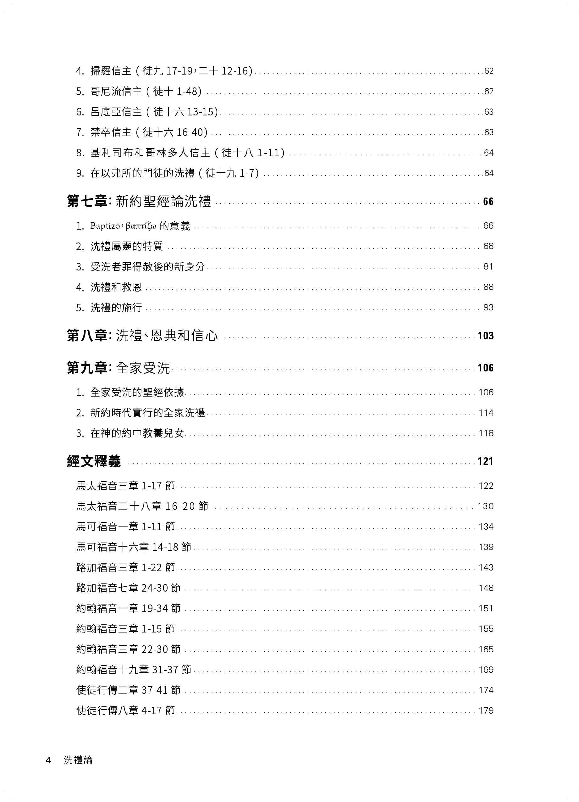
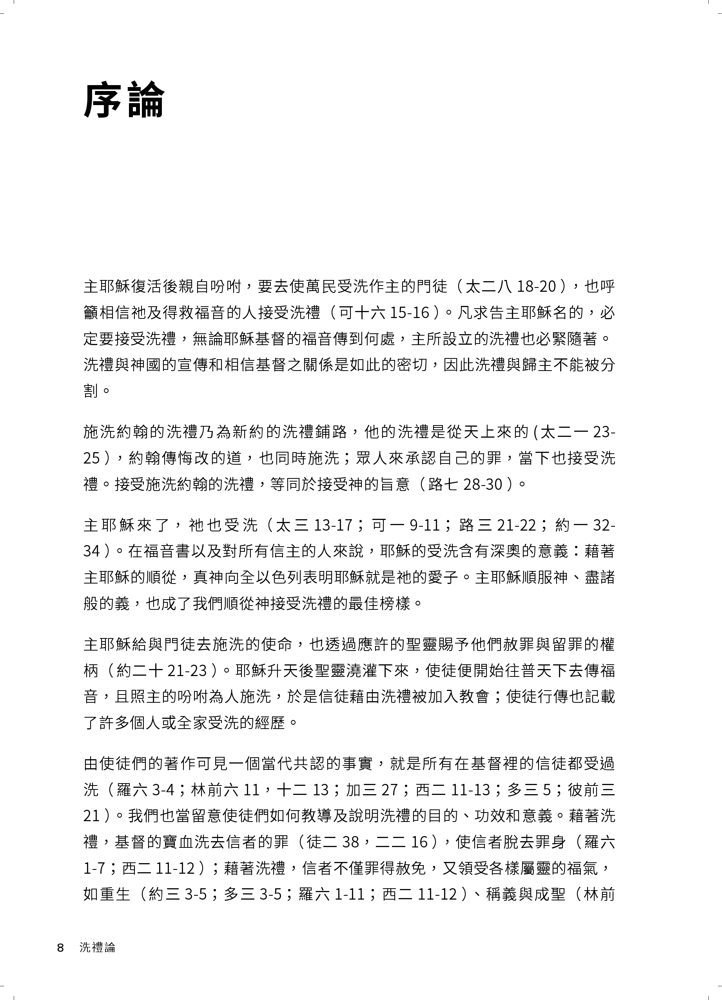
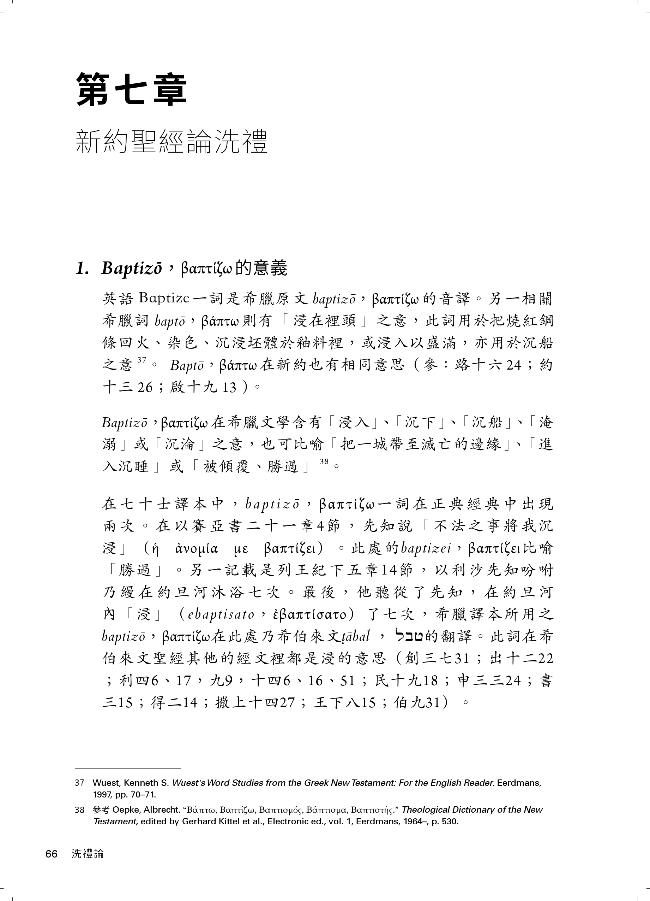
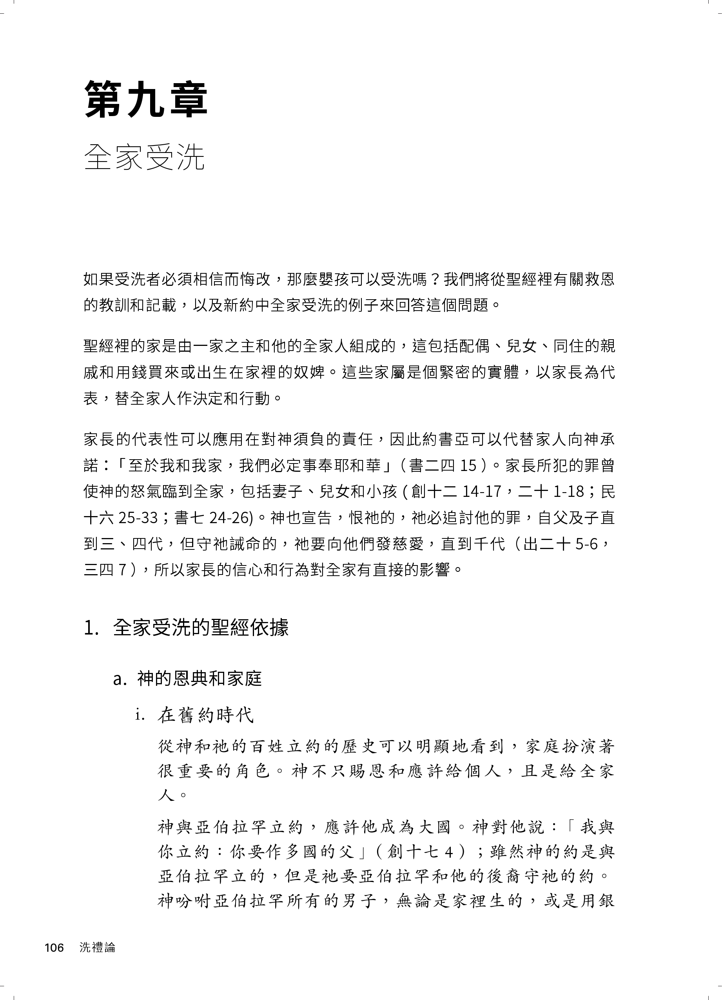

把洗禮放回整本聖經
本書不是只從單節經文談洗禮，而是從舊約潔淨、贖罪、割禮等脈絡出發， 讓讀者看見洗禮如何一路連到新約，成為神救恩歷史中的整體見證。
Why Read This Book
本書不是只從單節經文談洗禮，而是從舊約潔淨、贖罪、割禮等脈絡出發， 讓讀者看見洗禮如何一路連到新約，成為神救恩歷史中的整體見證。
從施洗方式、洗禮與救恩、洗禮與聖靈，到全家受洗與兒女教養， 它面對的是教會現場一直會遇到的問題，而不是抽離實務的空談。
當洗禮被縮成外在儀式，人對恩典、赦罪、歸入基督與新生命的理解就會變薄。 這本書的價值，在於把那個重量重新帶回來。
主軸
這本書不是要讀者只知道「該受洗」，而是要明白 「為何洗禮始終與信主、赦罪、歸入基督和得救緊密相連」。
Comprehensive Structure
本書架構嚴謹，引人入勝。前半部循著歷史軌跡，追溯舊約預表至初代教會的洗禮實踐； 後半部則深掘新約神學，針對「恩典、信心與全家受洗」等核心議題， 提供扎實的經文釋義與真理亮光，引領讀者建構整全的洗禮觀。

Three Reading Paths
書一開始就指出，主的吩咐、使徒的宣講與信徒的歸入教會，始終伴隨著洗禮。這不是附屬配件，而是福音實際進入人生命的關鍵節點。

第七章直接處理 baptizo 的字義、屬靈特質與受洗者的新身分，不讓討論停在模糊印象，而是回到語詞、經文與整體神學脈絡。

無論是「洗禮和救恩」或「全家受洗」，本書都不是用簡短口號回答，而是把救恩、約、家庭與教會的關係重新梳理，幫助讀者從根基思考。

For Readers
若你不想只知道流程，而想真正明白自己所領受的是什麼，這本書是很好的起點。
當你需要向人說明洗禮與救恩、恩典、信心之間的關係，這本書能提供扎實框架。
如果你曾經對全家受洗、兒女教養與約的延續有疑問，第九章會很值得細讀。
C290
《洗禮論》定價 350 元，購買即贈《安息日論》。一起從神救恩當中的教義在一次認識神的憐憫與公義。